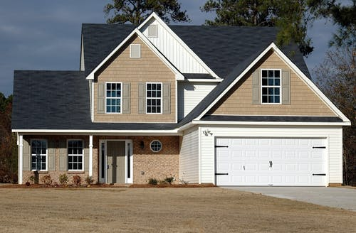

-
Fluid Layout
SS3 Media queries enable you to style a page based on different display surface factors such as width, height, orientation, resolution, etc. Media query listeners
-
Flexible Image
SS3 Media queries enable you to style a page based on different display surface factors such as width, height, orientation, resolution, etc. Media query listeners
-
Media Queries
SS3 Media queries enable you to style a page based on different display surface factors such as width, height, orientation, resolution, etc. Media query listeners